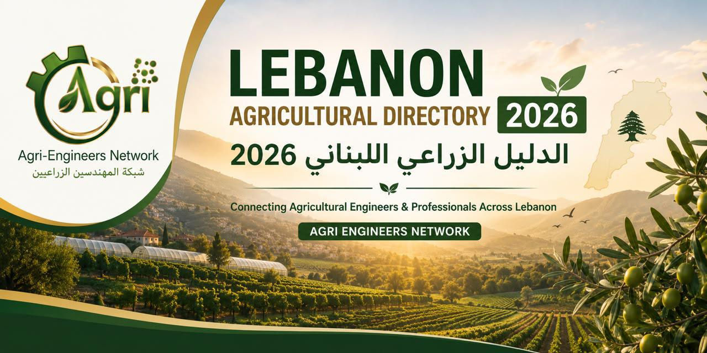

🇱🇧 مبادرة وطنية مستقلة · التسجيل مجاني
كلّ القطاع الزراعي اللبناني، في مكان واحد.
اكتشف المؤسسات والمزارع والخدمات الموثوقة حسب النشاط والمنطقة، وتواصل معها مباشرة.
✓ بيانات مراجَعة⌖ كل المناطق اللبنانية☏ تواصل مباشر

Agri Engineers NetworkConnecting Agricultural Engineers & Professionals Across Lebanon
استكشف بسهولة
تصفّح حسب النشاط
جهات من الدليل
— نتيجة
جاري تحميل الدليل…
Agri Engineers Network
تسجيل مؤسسة جديدةهل تعمل في القطاع الزراعي؟
سجّل مؤسستك أو نشاطك مجاناً وساعدنا في بناء قاعدة بيانات زراعية شاملة ومفيدة للبنان.